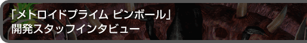
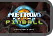
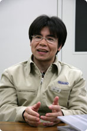
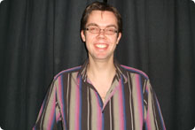
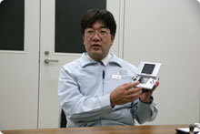
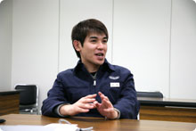
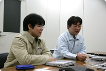
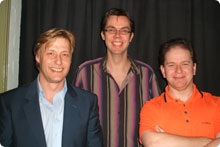
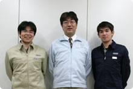

|  |  |
|
|
| --ソフトの制作はどういった所からスタートしたんでしょうか。 |
| 山田：岩田(任天堂代表取締役社長)がまだプログラマーだった頃、ファミコンソフトの『ピンボール』のプログラムをしていたんですね。なので、ピンボールゲームについてはかなり詳しいんですが、その岩田がフューズさんが作られたゲームボーイアドバンス用ピンボールソフトを見て、これは凄い技量だ、お任せしたら、いい物が出来ると思ったそうです。そして、生まれたのが『スーパーマリオボール』です。その後、ニンテンドーDSが発売され、DSの２画面を縦に見立てたら、ピンボール台になると思い、早速、フューズさんにDSを使ってピンボールのゲームを作ったら、どんな物になるか考えて下さいとお願いしました。 |
| --メトロイドを使うというのはいつ決まったんでしょう。 |
| エイドリアン：任天堂からメトロイドという提案がありました。面白い話なんですが、メトロイドでと言われる前にこちらでもメトロイドはどうかと、候補のひとつにしていたんです。なので、任天堂側から提案があった時、とてもエキサイトしました(笑)。 山田：こちらからは「メトロイドの世界観でクール、かっこいいピンボールを」とお願いしました。 エイドリアン：フリゲートオルフェオン(海外版ではパイレーツフリゲート)をプロトタイプとして最初に作ったのですが、多彩な世界のなかからハイテクで宇宙的な雰囲気を強く持ったものを作りたかったということで、あれを選びました。 山田：出来上がったものを見た時、メトロイドプライムの世界観をちゃんと持っているなと。依頼に対して的確にいいと思わせるものを上げてきた、と思いました。NOA(Nintendo of America)の人間にも見せる機会があったので、色々な人に見せて回ったんですが、メトロイドの世界観がよく再現できており、予想以上の出来だと言われましたよ。で、「サムスがモーフボールから起き上がってラピッドシューティングするのを作ってくれ」と言ったら本当にすぐ作ってくれて。これは行ける、と思いました。  寺崎：メトロイドの世界のどういう部分をピックアップして、ソフトに盛り込むかというのは、フューズさんにお任せでした。ピックアップはカイさんが頑張ったんじゃないかな？ カイ：ステージのピックアップはみんなでやったのですが、具体的にどう作ったかというと、とにかく『(ボールを打って)攻めた時に、なにか少しでも反応が戻ってくるような』ものにしました。 山田：攻撃するゲームプレイ方法を考えながら、ステージのピックアップと並行して作っていたようですね。 |
| --世界観を大事にということですが、どういったことを考えたんでしょうか。 |
| エイドリアン：メトロイドの世界を使う際に、ボールがパワーアップしたり、サムスの武器がアップグレードしたりと、GC版の『メトロイドプライム』の特色を上手にピンボールのなかに入れる、ということですね。 宮崎：こちらからもこういうのを是非入れて欲しい、という話は直接イギリスへ伺った時にお話ししました。 寺崎：例えば『メトロイドプライム』の世界観に限定して組み込んで欲しいということ、かっこいいピンボールにして欲しいということ、ベーシックなピンボールとしても長く飽きずに遊べるものにして欲しい、ということですね。ボールを弾くと、どこかに当たって必ずなにかが起きるようにして欲しいとお願いしました。ボールを弾いたところで、なんの反応もないのはやめてね、と。 |
| --ピンボール本来の楽しさってなんでしょう？ |
| カイ：同じことが２度と起きない、ということじゃないでしょうか。打つたびに違うゲーム性を得られるという部分ですね。そういった意味では、タッチスクリーンを活かしてナッジ（台を揺らすこと）を取り入れることが出来ました。 エイドリアン：実際のピンボールは派手な外観ですから。なにかを起こすために遊ぶわけですね。 |
| 寺崎：フューズさんの作るゲームの特徴として、バグの少なさがあるんです。バグの少ないプログラムを作ることについて、ポリシーとかあるんですか？ リチャード：まずチェックをよくすることですよね。基本的にテストコード(プログラムをチェックするプログラムのようなもの)の仕組みを作りながら仕事をしていたので、それだと思います。 |
| --テストコードはどこの制作でもやるものなんですか？ |
| リチャード：いや、あまり聞かないのでうちのオリジナルかも知れません。 寺崎：彼らはペアプログラミングという手法を使っていて、プログラマーが２人１組になって、１人がモニターに向かってプログラミングしている時、もう１人は後ろに立ってそれをじっと見ているのです。常にダブルチェックなのでバグが少ないというのもあるんでしょうね。 |
| --任天堂と仕事をしてみて如何でしたか？ |
| エイドリアン：任天堂の提案やコメントは、ゲームのクオリティを上げたと思いますよ。  寺崎：こちらはやりとりが大変とは思ってなかったけど、そっちは思ってたんじゃ？(笑) カイ：常にコミュニケーションを取っているので、バージョンを送ってコメントをもらったり話し合うことで、お互い理解には問題ありませんでしたよ。 |
| --振動ですが、これはどういう経緯で入れたんでしょう。 |
| 寺崎：任天堂では、ＤＳ用にいままでと違う仕組みのメカニカルな振動機能を作っていたんですね。岩田が「ピンボールにはこのメカニカルな振動が合うんじゃないか」ということで、トップダウンで実装が決まりました。振動のお陰で、演出に一役買ってますね。 |
| --プレイのコツってありますか？ |
| カイ：ナッジを使いこなすことですね。ボールをロストした瞬間に、タイミング良くナッジをする事で、ボールがフリッパーより上方向に戻る事があります。何回かに１回しか成功しませんけど。ピンボールでは"bang it back"という技なんですよ。それともう一つ、ボールが下向きのフリッパーに沿って転がっている時にナッジをすると、もう一つのフリッパーへパスする事ができますよ。これが自在に出来れば、目標物を狙いやすくなりますからね。 寺崎：そんなんカイさんしかできんわ(笑)。 カイ：やれば出来る！努力すれば出来ます(笑)。 |
| 寺崎：リアルのピンボールをカイさんがプレイした姿を見たんですけどね、日本人はゲームセンターへ行っても大人しくプレイしてるじゃないですか。でも彼を見てカルチャーショックを受けましたよ。エキサイトして台を叩いたり、ピンボール台と激しくバトルしていましたから(笑)。 宮崎：僕は本物のピンボールを触ったことなかったんですけど、フューズさんで遊ばせてもらってかなり楽しかったですね。イギリスのピンボール台は仕掛けも多くて面白いですよ。見た目も仕掛けも派手ですし。 |
| --イギリスではピンボールってホビーとして確立されてるんですか？ |
| カイ：No,死んでます(笑)。実際にゲームセンターで見つけることは、イギリスでも難しいですね。 エイドリアン：なので、ビデオゲームという形でピンボールを世の中に送り出すことにチャレンジ出来て嬉しいです。リアルのピンボール台では出来ないことを、ゲームで実現していく作業でしたし。 寺崎：カイさんはピンボール台をコレクションしてるんですよね。 カイ：はい、100台ほどのピンボール台をスカッシュコートを２面レンタルして保管してます。あ、でもリアルのピンボールより、自分達で作った物の方が面白いですよ！(笑) 寺崎：そうそう、今回は隠しキャラで牛が出るんですけど……。 |
| --牛？ メトロイドは関係ないですよね。 |
| エイドリアン：1980年代に『ファイアー！』というピンボールゲームがあって、その中で牛が出てきたんです。このゲームは、シカゴで大昔にあった大火事をテーマにしているんですが、、牛がランタンを蹴ったのが原因で起こった火事だったのです。で、このゲーム以降「牛」がピンボールゲームお決まりの隠しキャラになったと言われています。この話は欧米のピンボールマニアには有名で、今までのピンボール台の半数には、隠しキャラで牛が入っているんじゃないかな？当然、「スーパーマリオボール」にも入ってますよ。（笑） 寺崎：もし今回『メトロイドプライムピンボール』で牛を見つけたら、そっとしておいてあげて下さい(笑)。 |
| --では、日本のユーザーへメッセージをお願いします。 |
| リチャード：日本のユーザーさんにもぜひ楽しんでもらいたいです。 カイ：ボールから目を離さないで下さいね。 エイドリアン：僕のベストスコアは6800万点なので、それを超えてみて下さい。 宮崎：メトロイドプライムピンボールは非常に敷居の低いゲームなので、誰でも楽しめます。メトロイドというブランドに縁のなかった方も、体験して頂きたいと思います。 山田：ファミコンでリリースされた初代『ピンボール』は名作でしたが、それから20年経って"ピンボールゲーム"は進化してこうなったか、と実感しています。ピンボール本来の面白さはそのままで、演出面やゲーム性が更に進化しているんです。メトロイドを知らなくても充分楽しめる物になっていますので、どうぞ手に取って遊んでみて下さい。 寺崎：20代よりも若い皆さんは、実際に本物のピンボール台をプレイしたことがなくて、ビデオゲームのみということが多いと思います。これは本物のピンボールの面白さが凝縮されています。それから、もし本物のピンボール台を見かけたら実際にコインを入れて楽しんで下さいね。サウンドはメトロイドシリーズを代々手がけているスタッフが作っているので、ぜひヘッドホンでも楽しんで下さいね。 |
| --ありがとうございました！ |